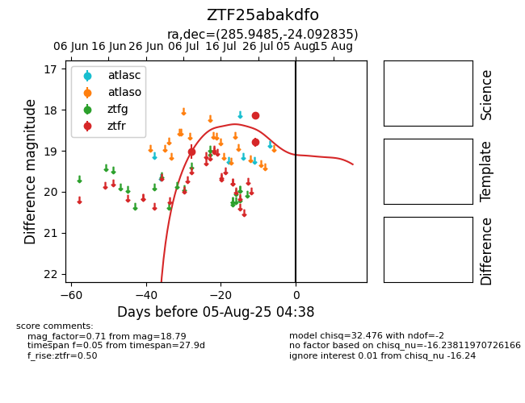

Target ZTF25abakdfo at 2025-08-05 04:38, see:
FINK: fink-portal.org/ZTF25abakdfo
Lasair: lasair-ztf.lsst.ac.uk/objects/ZTF25abakdfo
ALeRCE: alerce.online/object/ZTF25abakdfo
alt names
ZTF25abakdfo (ztf,fink)
coordinates:
equatorial (ra, dec) = (285.9485,-24.09284)
galactic (l, b) = (12.4287,-13.29243)
photometry
last ztfr=18.79
3 ztfr detections
